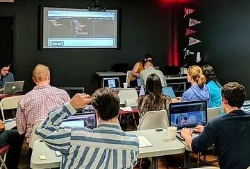
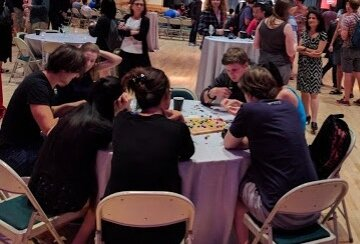
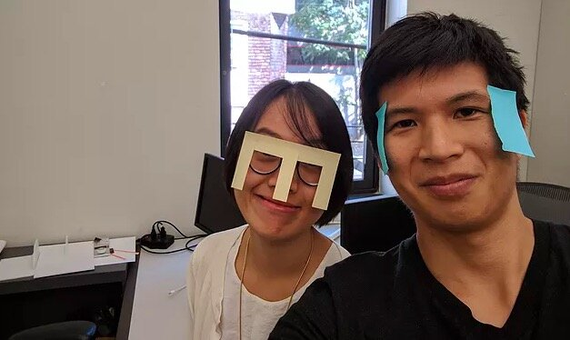
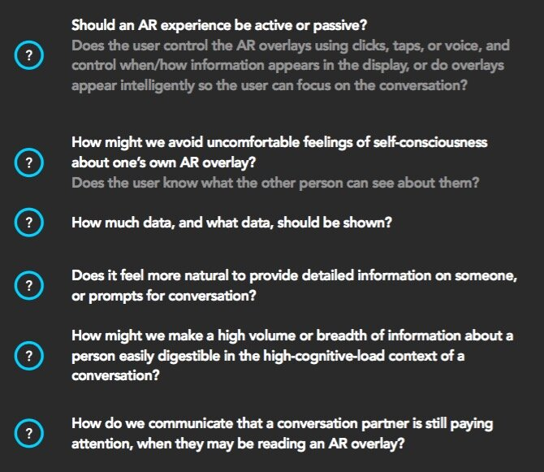
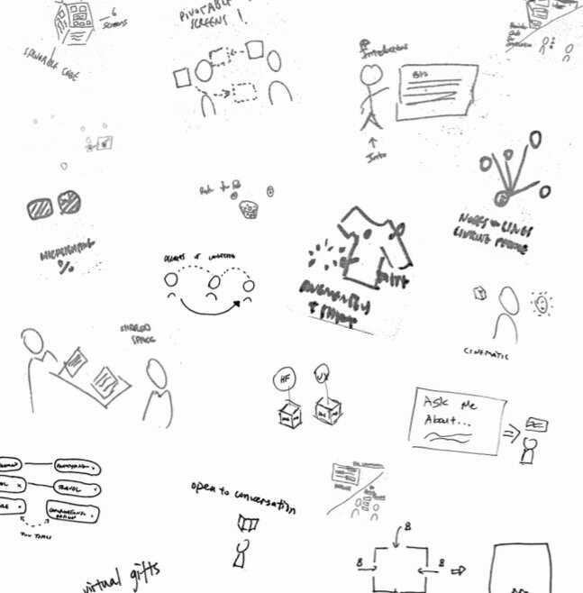
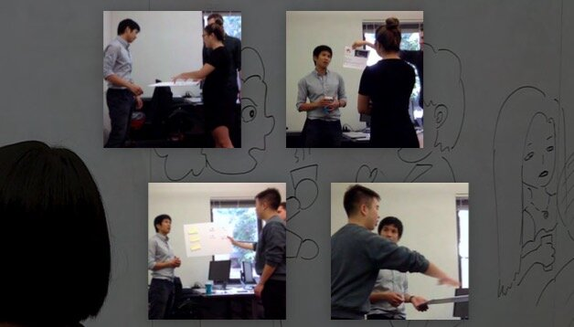
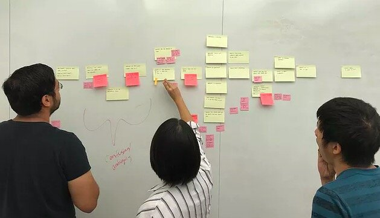
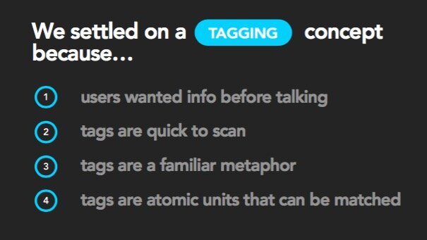
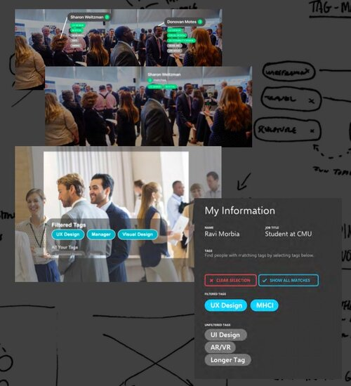
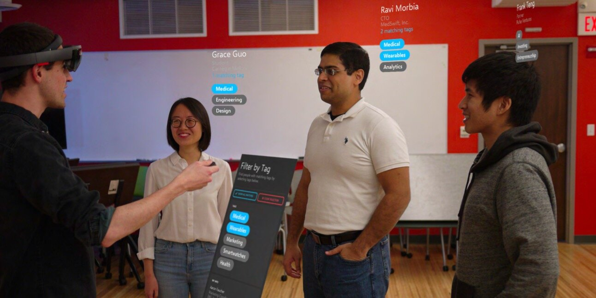

Case 04 · Carnegie Mellon Research Project · UX research & prototyping
How might AR improve networking?
Exploring how augmented reality can enhance the networking experience of finding and meeting relevant contacts.
How might augmented reality help strangers find common ground?
At networking events, people often approach strangers arbitrarily — by proximity, gender, or age. What if we could surface deeper interests beyond superficial commonalities?
Alert users to people of interest — sparingly.
Implementing AR networking is not a question of if it can be done, but how it should be done. From our user testing, we realized our biggest challenge was balancing the usefulness of AR without being too distracting. The journey below presents our guidelines for implementation.
How could AR facilitate professional networking?
As computers weave themselves into the fabric of our lives, it is crucial to understand how technology can subtly blend with our attention. This study explores AR with the HoloLens 2, but with a designed eye towards future (lighter and wider field-of-view) AR technology.
What problem are we solving with AR — and is AR the right solution for this? We wanted our end product to be built on solid user data and research insight. With our focus on professional networking, we employed participatory observation and fly-on-the-wall methods to understand how people currently met each other.


What does AR feel like?

“Is that stranger creepily staring at me, or reading my information?”
Before we prototyped with the HoloLens, we stuck cut post-its to our faces and pretended to be strangers. It was surprisingly informative and helped us generate a list of concerns surrounding data privacy, attention, and cognitive load.
For instance, body language becomes hard to decipher when individuals are experiencing custom-tailored realities. When we placed AR information on my forehead, it was unclear if someone was just “browsing” the room or wanted to talk to me.

When, how, and where does information appear?

We shifted focus to the experience before conversations happened.
After consolidating results from our early user tests, we focused on two areas of opportunity for AR: pre-approach and during conversation. However, we realized that our scope was still too wide. We found that applying AR during conversation was too variable.
We ran a series of low-fidelity tests and interviews with 17 graduate students.

“Walk us through the last time you were at a networking event.”
We relied on personal anecdotes to avoid data gathered from generalized feelings and hypothetical situations.
“A stranger comes up to you and says, ‘Wow, those hydrangeas outside your front porch are my favorite kind of flowers!’”
We also put our users in uncomfortable scenarios and explored edge cases where AR pushes against users’ comfort zones.

We designed a matchmaking tag system.

But I still want to see tags that don’t match mine.
User testing participant
Key questions
- Privacy comfort zones: to what extent are users comfortable with sharing personal data?
- Attention economy: how much information can we display without becoming too distracting?
- Contextual awareness: where are AR displays placed, and when would data be shared with other users?
We prototyped on the HoloLens with the Unity3D engine and MRTK toolkit.

Incorporating everything, our HoloLens UI sat above the heads of the wearers. The wearer used a menu to choose custom filters (see the demo video below), which informed the system what data to display.

So — does our system help users meet new people?
With our program running on HoloLens, we conducted a think-aloud user study with 5 graduate students from various industry backgrounds. We took video recordings, noted their verbal and non-verbal reactions, and conducted a retrospective interview after each think-aloud. Our results validated our prior low-fidelity findings and uncovered further opportunities for development.
This is super helpful. I’ve been to so many events where I only have one hour and I want to meet people I actually want to talk to.
User study participant
Designing where no design patterns exist.
This endeavor was the first challenge I took exploring a novel technology. Since no design patterns (or even stable software releases!) existed, we were designing and hacking together pieces at every step. Classic design methods were useful to fall back on, but had to be adapted for this novel domain.
If I could continue this project, I would love to expand on the team-bonding concepts we found in research. What if a member’s interests determined what AR games they could play with others? Or pre-selected their affiliation in an alternate reality game? Could we even eliminate networking events as they are today, by allowing organizers to create improvised team games based on interest?